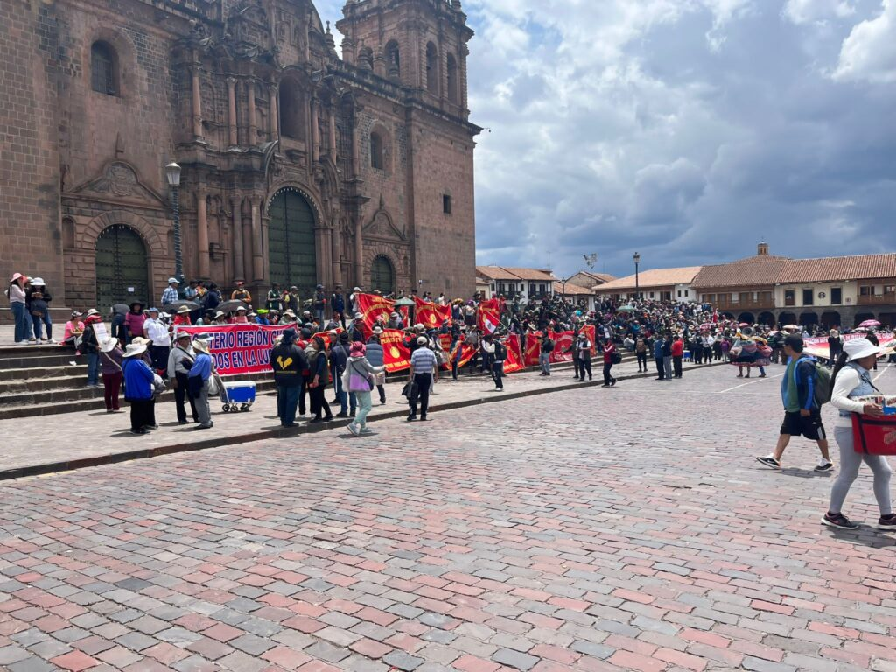
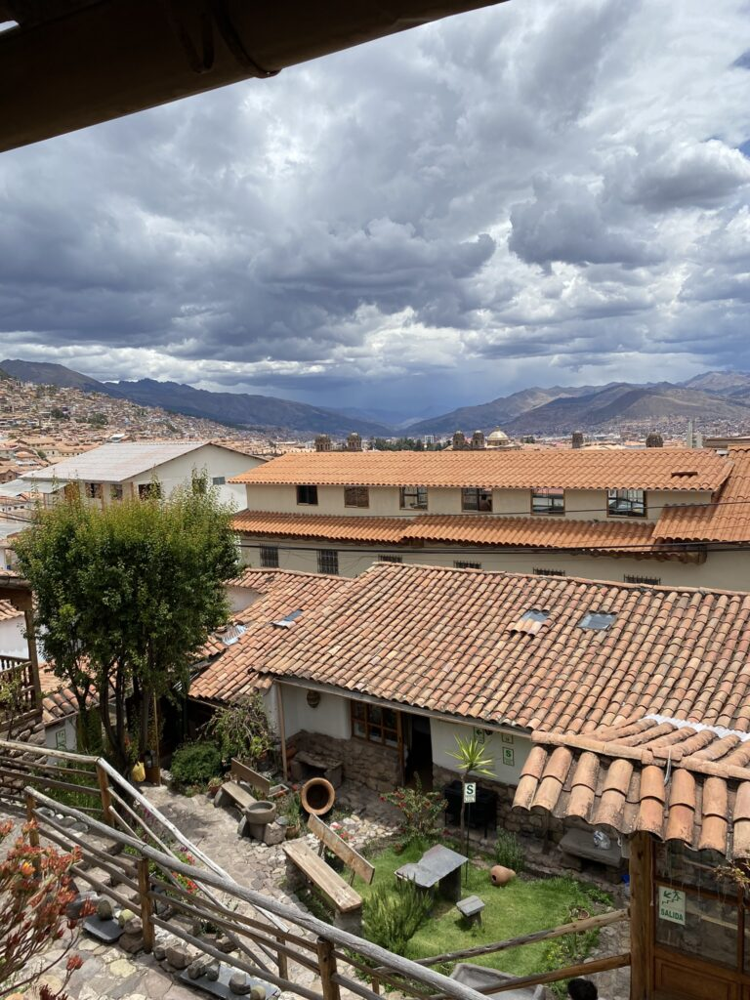

Met een oud-president in de gevangenis, woendende provincies die verkiezingen eisen en demonstranten die geen grenzen meer kennen, ondergaat Peru een hevige transformatie. Van een onondekt paradijs naar een chaotisch, gevaarlijk land vol onderzekerheden.
Zodra ik uit mijn geliefde hospitaal stap, wordt al gauw duidelijk dat ik nog wel even vastzit in het omsingelde Cusco. Bijna alle wegen in het land worden op gewelddadige manier geblokkeerd of verwoest en zelfs op de landingsbanen van het vliegveld paraderen demonstranten. De impact van de politieke chaos die is ontstaan na een mislukte coup en een wissel van de wacht, is zelfs voor veel locals nieuw. De opstandelingen zijn bereid het land plat te leggen om constructieve veranderingen te eisen.

Wie het toch waagt de weg te betreden, neemt enorme risico’s. De horrorverhalen stapelen zich op in de Whatsapp-groep voor Nederlanders in Peru (500 deelnemers). Over een reis van tweehonderd kilometer wordt drie dagen gedaan. Uitgehonderd, uitgeput en vernederd – omdat ze bepaalde ‘opdrachten’ moesten uitvoeren – komen reizigers van de grensstad Puno in Cusco aan. In Machu Picchu zitten de meeste reizigers muurvast. De enige uitweg, een spoorweg van 44 kilometer, is gesaboteerd en wanhopig begint een aantal aan de onzekere wandeling. 10 uur later komen de meesten beroofd aan op de dichstbijzijnde veilige plek. De rest hoopt op latere evacuatie met helikopters.
Ook de Nederlandse ambassade vraagt bezorgd waar ik ben, hoe het gaat en belooft eventuele evacuatie uit het gevangenschap van het Inca-centrum dat Cusco heet. Een avondje tongen in Bolivia even geleden houdt me nu aan bed gekluisterd met de ziekte van Pfeiffer, dus de halve lockdown gaat deels aan me voorbij. Als ik me dan toch in de stad begeef voor een ontbijtje (zalig zuurdesembrood i.p,v. het overvloedige droge witbrood), gaan ineens de luiken van de bakkerij dicht. Ik mag pas weg als de protestmars voorbij is getrokken en de kust veilig is. Restaurants en winkels gaan nog maar sporadisch open. Een dag later snak en loop ik naar de beste sushitent van de stad, maar ik draai me om als onrustzaaiers toeristen op een terras met stenen bekogelen.
De uitroeping van een noodtoestand draagt niet bij aan de gemoedrust en alle reizigers proberen zo snel mogelijk het land te verlaten. Maar Nederlanders zouden Nederlanders niet zijn als ze in de eerste nacht van de ingestelde avondklok toch nog even een technofeestje organiseren. De liveblog met het nieuws ververs ik om het uur en correspondent Charo geeft me inzicht in de ingewikkelde situatie.
Luc zit al die tijd voor een werk-avontuur in de jungle en krijgt niks mee van de chaos. Als ik zijn ontspannen pretgezicht ineens aan de ontbijttafel van mijn hostel zie zitten, krijg ik weer vertrouwen en energie. Hij is zonder problemen op de weg naar Cusco teruggekeerd en ik praat hem bij over de bewogen afgelopen drie weken, die ook zijn reisplannen behoorlijk in de war schoppen. Het vliegveld is onder hevige legerbewaking weer open en we vliegen direct naar het veilige Lima. ‘s Avonds arriveert ook vriendin Iris in de gigantische hoofdstad. Zij kan eindelijk opgelucht ademhalen na een stressvolle voorbereidingsweek.

De laagte en bekende koppies doen me goed en we drinken veel te sterke pisco op de lokale markt tijdens een late schranspartij, daags voordat we voor een nieuw dilemma staan. Lima is geen stad om lang te vertoeven en ik bemachtig een ticket naar het warme surfstrand van Máncora, dichtbij de grens met Ecuador voor een eventuele vluchtroute. Mijn verworven reisgenoten besluiten tot hetzelfde, in afwachting van een belangrijke parlementaire stemming. Geef het volk por favor vervroegde verkiezingen, dan houdt de waanzin wellicht op.